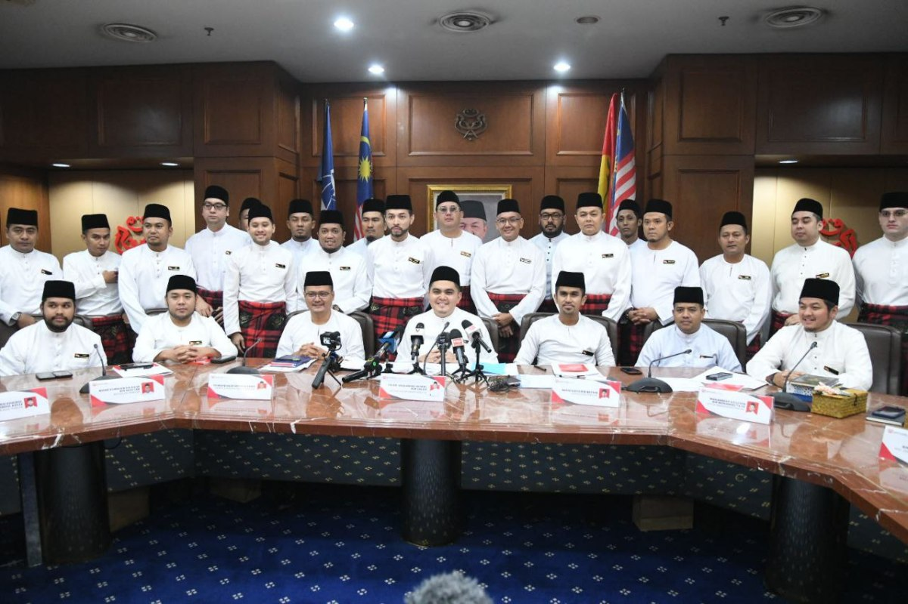
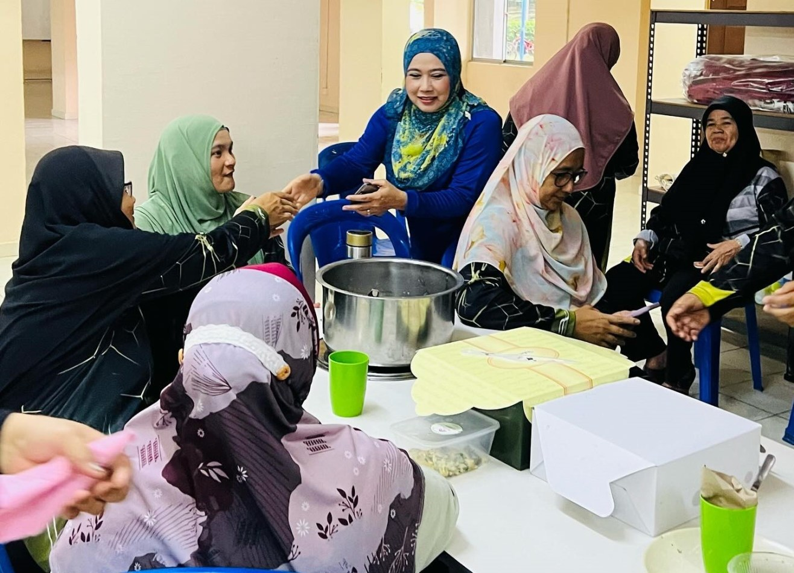

Struktur UMNO Putrajaya, penerangan, dan gerak kerja akar umbi
"Gerak kerja parti mesti dekat dengan rakyat dan jelas pada tujuan perjuangan."
Kepimpinan UMNO Putrajaya menjadi payung kepada kempen Tak Banyak Alasan, menyusun arah kerja kawasan, hubungan komuniti, dan koordinasi jentera di setiap presint.
"Penerangan yang baik mesti menjawab isu rakyat dengan bahasa yang jelas dan dekat."
Tengku Muhammad Hafiz menjadi tokoh sentral penerangan kempen. Peranannya mengangkat mesej UMNO Putrajaya, menyusun naratif, dan menghubungkan isu warga dengan gerak kerja parti.

"Anak muda bukan hanya penyokong, tetapi penggerak mesej dan kerja lapangan."
Jentera pemuda membantu kempen bergerak lebih cepat melalui komunikasi digital, program lapangan, penyelarasan sukarelawan, dan hubungan langsung dengan komuniti muda Putrajaya.

"Kempen hanya kuat apabila ia mendengar dan bekerja bersama rakyat."
Pasukan akar umbi mengurus ziarah, semakan isu, saluran aspirasi, dan sokongan program supaya Tak Banyak Alasan tidak berhenti sebagai slogan, tetapi hadir sebagai kerja lapangan.